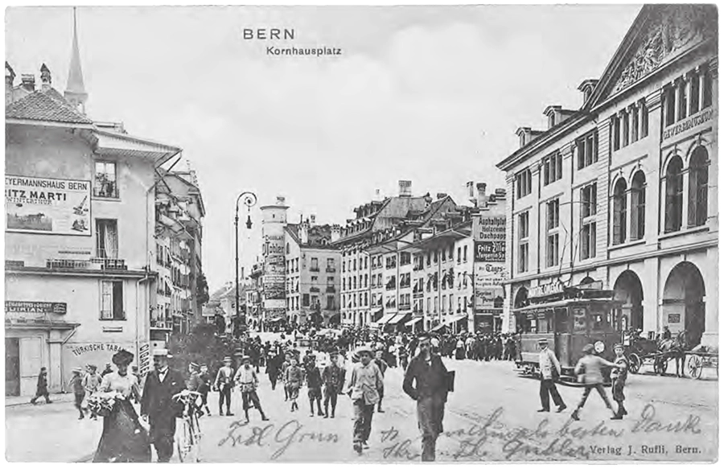
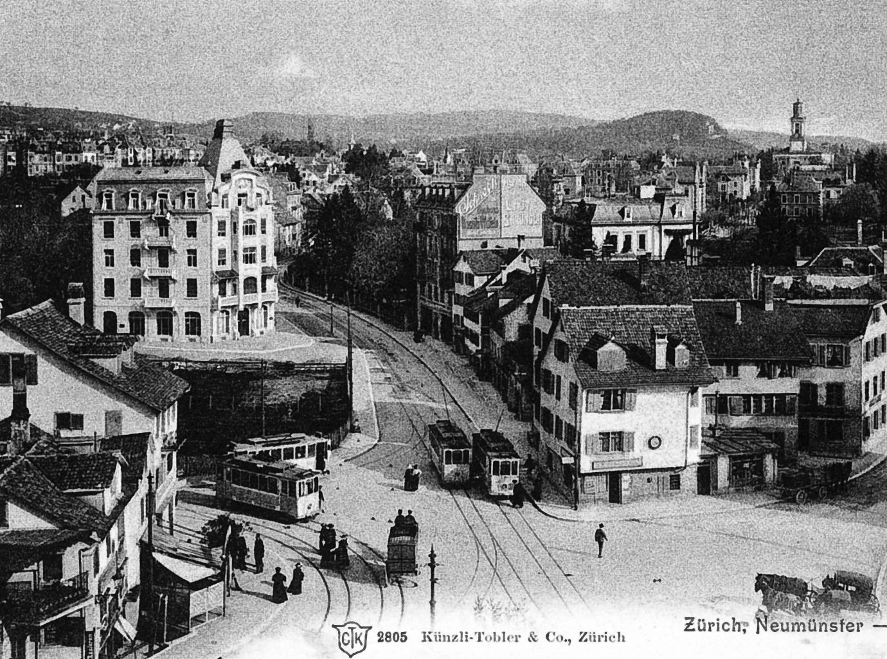
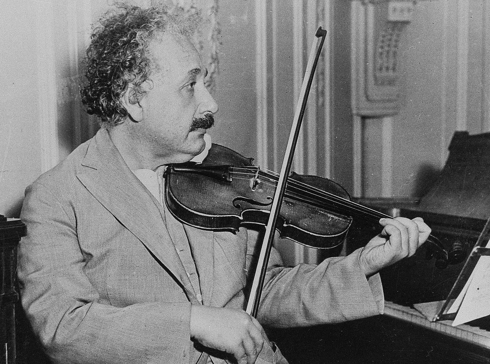
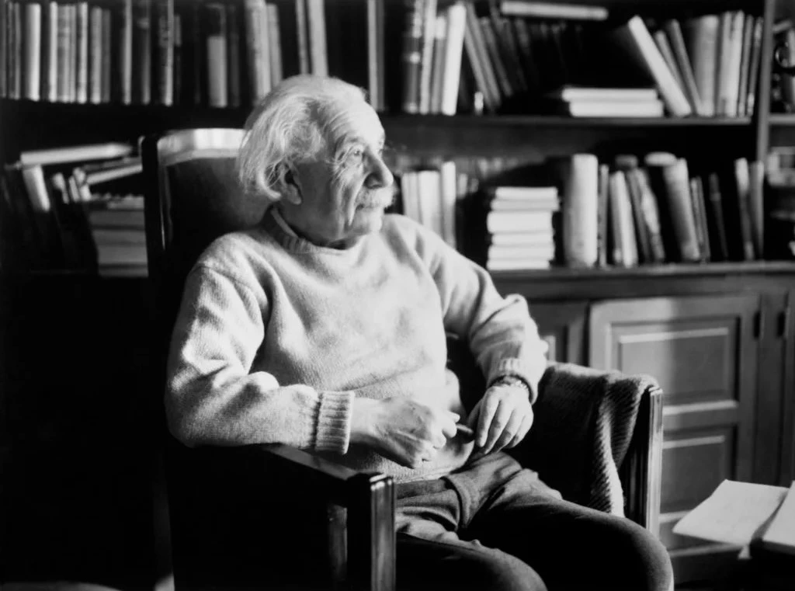

1879
Birth in Germany
Albert Einstein is born on March 14 in Ulm, Germany, to Hermann Einstein and Pauline Koch. Six weeks later, the family moves to Munich, where Einstein will begin his early education
Explore the life and legacy of one of history's greatest minds. Discover the man behind E=mc² and his lasting impact on science and society.
Albert Einstein is born on March 14 in Ulm, Germany, to Hermann Einstein and Pauline Koch. Six weeks later, the family moves to Munich, where Einstein will begin his early education
Einstein moves to Switzerland and attends the cantonal school in Aarau. He renounces his German citizenship and later gains admission to the Swiss Federal Polytechnic School in Zurich

Einstein obtains Swiss citizenship. Unable to find a teaching position, he accepts a job as a technical assistant at the Swiss Patent Office in Berne

In his "miracle year," Einstein publishes four groundbreaking papers, including his special theory of relativity and the famous equation E = mc². He also receives his PhD from the University of Zurich

Einstein becomes a professor at the University of Berlin and a member of the Prussian Academy of Sciences. He also becomes director of the Kaiser Wilhelm Institute for Physics

Einstein completes and publishes his general theory of relativity, which extends his system of mechanics to incorporate gravitation
A solar eclipse confirms Einstein's predictions on the deflection of light rays, leading to his remarkable rise to world fame. He also marries his cousin, Elsa Löwenthal
Einstein makes his first trip to the United States with Chaim Weizmann. He is welcomed in New York City and gives lectures at several universities
Einstein is awarded the 1921 Nobel Prize in Physics for his work on the photoelectric effect, rather than for his more controversial relativity theories

With the rise of Nazi power in Germany, Einstein renounces his German citizenship and emigrates to the United States. He accepts a position at the Institute for Advanced Study in Princeton, New Jersey

Einstein signs a letter to President Franklin D. Roosevelt, warning about the potential development of "extremely powerful bombs of a new type" and recommending that the U.S. begin similar research. This letter eventually leads to the Manhattan Project
Einstein becomes a United States citizen, while retaining his Swiss citizenship
Einstein retires from his position at the Institute for Advanced Study but continues his work on unified field theory and becomes increasingly involved in political causes
Einstein is offered the presidency of the State of Israel, which he declines
On April 18, Einstein dies at Princeton Hospital from an abdominal aortic aneurysm. His brain is preserved for scientific study, and his ashes are scattered in the Delaware River
